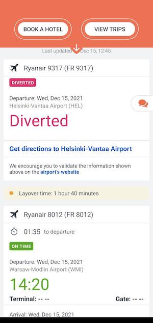
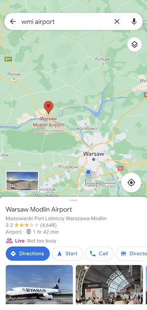
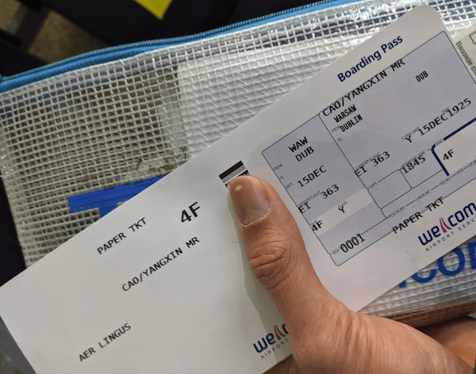
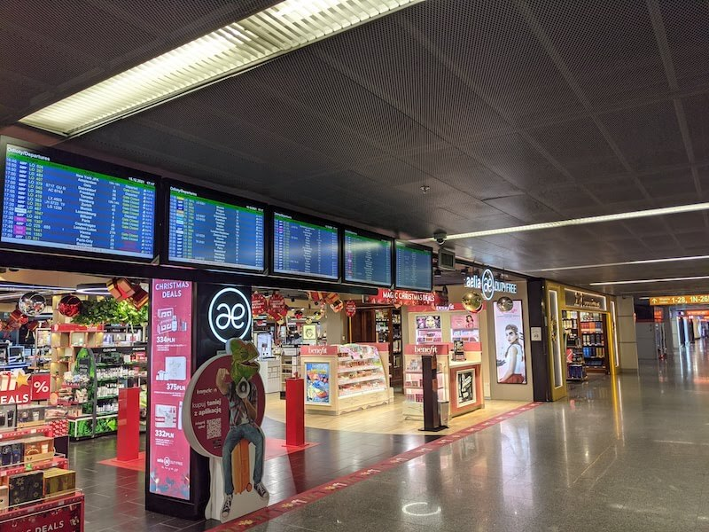
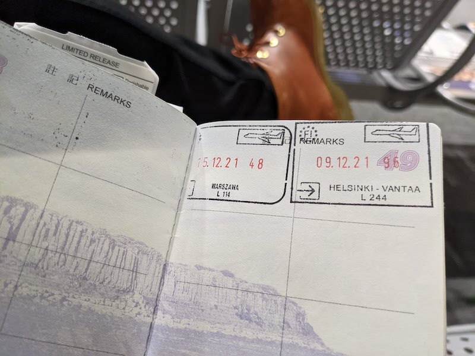
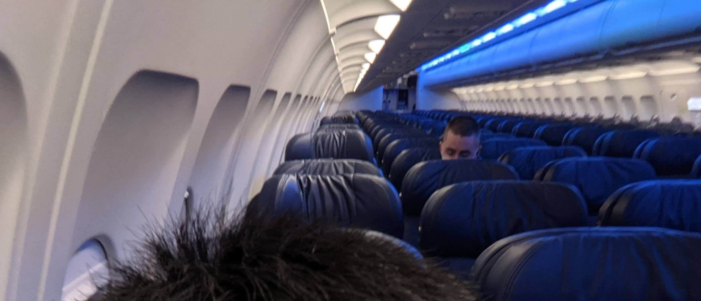
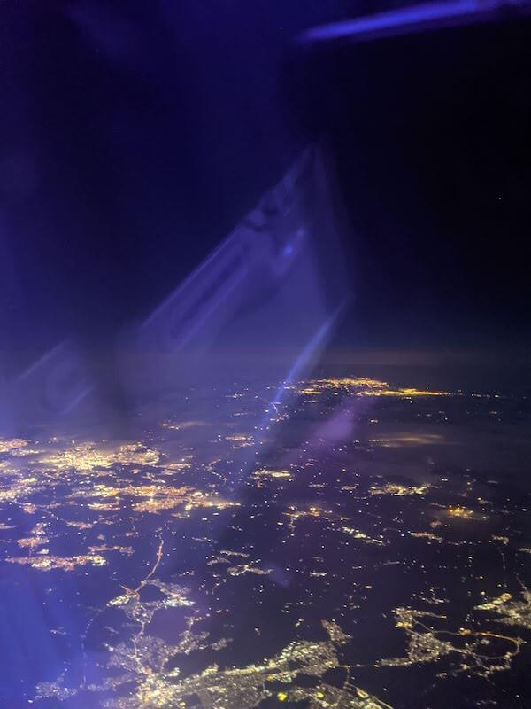
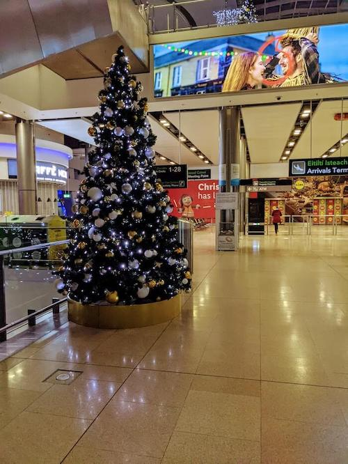

疫情下的芬蘭旅遊 (八)：出乎意料的航班
就在一路飛機即將抵達波蘭的時刻，結果，機長廣播….. 於是飛機就這樣硬生生的在空中無限盤旋。
愛與恨交織的返程 (續)
出乎意料的插曲
就在一路飛機即將抵達波蘭的時刻，結果機長廣播因為天候因素無法降落，於是飛機就這樣硬生生的在空中無限盤旋。機上可以感受到其他旅客在這樣無數的盤旋中，逐漸失去耐性。
我的天…. 我以為我之前遇到班機被取消已經是夠賽了、剛剛被加收拖運費才剛覺得有點雷，沒想到這次是班機直接沒辦法降落而且接不上轉機。

當下想到可能趕不上轉機的我更是如坐針毯，但也只能說服自己冷靜，因為在空中什麼事情也做不了。直到後來飛機在空中多盤旋了快一小時才降落，直接大延誤。
就在即將降落我仍感到一絲希望的時候，機場廣播告知大家我們要決定降落在其他機場，那個機場則離原本目標機場需要約兩個小時的車程。

落地的那刻感受到波蘭充滿霧氣灰矇矇的天氣，大概也跟我當時的心情一樣。
下機時我就拿著下一班機的編號跟著空服員詢問下班的轉機怎麼處理，不過大概是空服員這種問題看多了，空服員只一臉淡定冷冷且不耐煩的跟我說「你這個趕不上了啦，跟著人群走你們會有接駁車到原本機場的。」 (原文已經忘記，不過大意如此)
結果跟著人群走，中途還要入境波蘭掃描 COVID 文件，這部分 RyanAir 完全不管是不是有旅客卡住。後來也是指示接駁車把人載到機場領行李後，基本上就是把旅客放生了，你問我我還不知道怎麼接駁到目標機場。
總之，航空公司也不是笨蛋，他們選擇轉降的決策早已經精密計算過，反正延誤不超過三小時沒有涉及到歐盟 EU Regulation 261/2004 規範的退費標準，瞬間讓你退費的機會直接降級渺茫。反過來就要怪你轉機抓太短、旅遊不便險沒有花錢買下去。
噴錢的 200 euro
我在落地波蘭後看了看，RyanAir 只有一班飛機往返，而且要明天早上才有。但因為當時返程入境有規定 COVID 測試報告 (Antigest Test) 需要是 48 小時內的報告，如果隔天的飛機又因為延誤落地，我很可能超過 48 小時，那我真的不知道到底會不會違反入境規定被罰。平常要是這種狀況我就順便待在波蘭多玩幾天了，但疫情下讓這種事情變得更加棘手。
由於降落的機場實在是太冷門，飛回的班機不多。幸好，看來看去發現被轉降的機場當天晚上 Aer Lingus 有一班返程，不過要 220 多歐。
想來想去，由於我不確定我在波蘭轉機和各種想迫切返家的因素 (住宿、重新篩檢的成本)，我還是決定在機場心一橫，當場線上刷卡買了機票及行李托運。
(這次學乖了，但是 Aer Lingus 的行李規定就寫得很清楚，只能帶上一個登機箱上機，我的情況也確實是要買的)。
心裡同時望著遲遲沒有開 Check-in 窗口的班機告示板上提示，在機場乾等的同時，死盯著告示板祈禱班機不要取消。
雖然詢問機場工作人員提前得知機場報導的櫃位，但到櫃台 Check-in 行李拿到機票的那刻，心裏才稍微踏實些，加上 Aer Lingus 的地勤真的比 RyanAir 好太多了 (也沒有什麼要線上 Check-in 或是列印機票的奇怪問題，這才是正常的航空吧…)，讓我稍微不那麼緊繃。

但焦慮症頭還是有一絲些微的聲音告訴自己不可以大意，現在想想真的不知道在焦慮什麼。
傻眼的另一道護照查驗 (Passport Check)
過安檢後我想說一切都穩了！由於我大概是開櫃當下就跑去 Check-in，離登機還要 1-2 小時，於是就在機場的免稅店閒晃、買東西、吃吃喝喝。

不過看來我的焦慮是有道理的，就在我在免稅店跟餐廳消耗時間大把時間，想說等到快登機前再往登機口的方向走去。在慢慢晃過去前往登機門的時候，結果，才注意到原來還要做另一道護照查驗！

還好我是登機前 30 分鐘慢慢晃過去，才發現這個驚人的事實。看著排隊的人潮跟慢吞吞的邊境檢查官，深怕會因此趕不上飛機的我，只能心裏想辦法抑制及緩和焦慮，因為前面歷經太多被雷的事件放大了那種感受，腦袋已經閃過數百種又因此沒有搭到飛機的各種劇場，如果真的遇到了….. 那真的是超衰了。
你可以把申根區當成單一國家，也就是說，只要從任何一個申根國入境後，出入其它申根國都如同在同一國家，沒有明顯的邊境。申根區免簽規定是「180 天內可自由進出，但累積可停留的時間不能超過 90 天」。
因為我返程的國家不在申根區裡面，所以出去視同離開申根區，會執行二次護照查驗 (如果是往返其他申根國家就不用走這個檢查，因為沒有離開申根區)。總而言之，還是很感謝邊境官員的速度，順利在開放登機前 10 分鐘通過了：

真的是學到一課，下次再去申根區跟非申根區往返的時候，去登機門前我會記得多留點時間排隊的 ….
終於搭上飛機
就在跟著同班機的旅客跟小姊姊們點頭示意一同上機場接駁車後，我才意識到原來整班機加上空服員跟機長，不到 10 個人搭一台 A320。看著這麼空的座位，我終於懂為什麼剛剛 Check-in 的時候地勤一派輕鬆的跟我說今天的座位任你挑了：

可見這個班機的冷門程度 (可能也是因為是平日的關係)，但也算是很特別的體驗了。
搭上飛機的那刻，心裡雖然閃過各種入境遇到問題的荒謬想法，比如又遇到天氣問題改降其他機場超過快篩報告效期之類的，但在飛機上看到天氣晴朗的晚上，讓人瞬間鬆了一口氣。
不禁想著這趟旅途真的是充滿認知自己焦慮感作祟和各種非預期的狀況，這種旅遊過程大概十足讓人印象深刻了。

我以為之前去美國被叫去小房間問話已經是旅遊史中很刺激的體驗了，即使再多練習對於各種狀況處之泰然，但當下頓時還是覺得有時候遇到了更難的情境，不免心起波瀾，更讓人措手不及。

但我想，也因為經歷過這樣的過程，間接地塑造未來面對未知問題的那份信心。

在飛機落地踏上熟悉的國度後，有一種像回老地方的那種踏實。看著隨處可見的聖誕樹和每個人洋溢滿臉的笑容，回來真好。
後記
在導入疫苗護照後，歐洲通行變得十分方便，一度讓我以為歐洲的旅遊業要回春、可以規劃旅行的時候，我想誰都沒能預料到 Omicron 突然一個爆發打亂了所有表面上看似穩定的秩序。
就在我們回來後，英國因為 Omicron 變種病毒的關係達到了一發不可收拾的地步，隨著法國開出限制禁令後，各國紛紛封鎖英國的旅客：
我想在疫情時代仍有旅遊的可能，只是稍微麻煩並且有時增添了幾分不確定因素。但想想，我還是很慶幸我取消了去英國的計畫。
也希望在閱讀到這篇內容的你，可以一同感受我想分享那份到芬蘭旅遊所經歷的氛圍和驚喜。
親愛的芬蘭，我相信有機會我還會去旅遊的。
參考總花費
| 項目 Item | 花費 Cost | 個人支出 Personal Cost | Comment |
|---|---|---|---|
| Hostel in UK | 143.36 GBP | 0 | 7 Days (可退款訂單取消) |
| 15.20 GBP | 18.26 | 1 Day (沒用到認賠) | |
| Boots COVID Testing | 35 EUR | 35 | Boots COVID Rapid Antigen testing |
| 9Live COVID Testing (Finland) | 99 EUR | 99 | 79 Testing + 20 Official Certificate |
| FinnAir | 63.18 EUR | 63.18 | ROVANIEMI -> HELSINKI |
| RyanAir | - | - | - |
| (沒用到認賠) | 22.49 EUR | 22.49 | DUB-> LTN + Priority |
| 35.99 EUR | 35.99 | DUB -> STN + Priority | |
| 44.30 GBP | 53.23 | STN -> HEL + Priority | |
| 34 EUR | 34 | HEL -> WMI + Priority | |
| 45.99 EUR | 45.99 | Additional Bag (登機門加收) | |
| (沒用到認賠) | 21.81 EUR | 21.81 | WMI -> DUB + Priority |
| (沒用到認賠) | 43.05 EUR | 43.05 | Additional check-in Bag |
| Aer Lingus (非預期) | 1018.04 PLN | 220.25 | WAW -> DUB (Check-in + Carry-on) |
| VR Night Train | 84.5 EUR | 84.5 | |
| FinnAir | 63.18 EUR | 63.18 | |
| Taxi | 20 EUR | 5 | To Rovaniemi airport |
| Taxi | 26.5 EUR | 6.625 | Rovaniemi to Santa Claus Village |
| Taxi | 41 EUR | 8.2 | HEL airport to city center |
| Accommodation (Nova) | 700 EUR | 175 | 1 night / 4 person |
| Accommodation (Scandic) | 192 EUR | 96 | 1 night / 2 person |
| Accommodation (AirBnB) | 541.2 EUR | 135.3 | 3 nights (4 days ) / 4 person |
| Experience | 99 EUR | 99 | |
| Shared Food | 41.82 EUR | 10.46 | 其他日常吃的食物和餐廳沒有算進去 |
| 1375.515 |